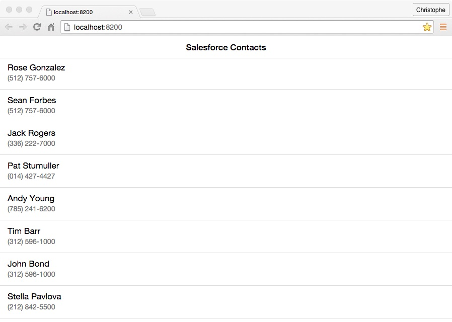

As mentioned in the previous module, there are two ways to create a hybrid application with the Mobile SDK:
We covered the first approach in the previous module and cover the second approach in this module.
To create an application using the Cordova CLI:
Make sure Cordova is installed on your computer
npm install -g cordova
On a Mac, you may have to use sudo:
sudo npm install -g cordova
Create a new application:
cordova create contactmanager com.mycompany.contactmanager ContactManager
Navigate (cd) to the project directory
cd contactmanager
Add some useful Cordova plugins (optional):
cordova plugin add cordova-plugin-device
cordova plugin add cordova-plugin-console
cordova plugin add cordova-plugin-statusbar
Check out this page in the Cordova documentation for more information on the Cordova CLI and plugins
Add the Salesforce Mobile SDK plugin:
cordova plugin add https://github.com/forcedotcom/SalesforceMobileSDK-CordovaPlugin
Create the Salesforce Mobile SDK config file (bootconfig.json) in the www folder of your project:
{
"remoteAccessConsumerKey": "3MVG9Iu66FKeHhINkB1l7xt7kR8czFcCTUhgoA8Ol2Ltf1eYHOU4SqQRSEitYFDUpqRWcoQ2.dBv_a1Dyu5xa",
"oauthRedirectURI": "testsfdc:///mobilesdk/detect/oauth/done",
"oauthScopes": [
"web",
"api"
],
"isLocal": true,
"startPage": "index.html",
"errorPage": "error.html",
"shouldAuthenticate": true,
"attemptOfflineLoad": false
}
For a production application, you should create a Connected App in Salesforce and provide your own Connected App ID and Callback URI.
To run the application on a mobile device or in an emulator, you need the vendor's SDK for the target platform installed on your computer (for example, you need Xcode and the iOS SDK to build the app for iOS, and the Android SDK to build the app for Android). If you don't have a vendor SDK available on your computer, you can still run the application in the browser on your computer. In that case, skip this step and go directly to step 4 below.
To make sure the header of your application doesn't collide with the iOS status bar, add the following preferences to your project’s config.xml:
<preference name="DisallowOverscroll" value="true"/>
<preference name="StatusBarOverlaysWebView" value="false" />
<preference name="StatusBarBackgroundColor" value="#ffffff" />
<preference name="StatusBarStyle" value="default" />
Add a platform. For example to add iOS:
cordova platform add ios
Build for the platform you added. For example to build for iOS:
cordova build ios
Run the project. For example, for iOS, open the project (platforms/ios/ContactManager.xcodeproj) in Xcode and run it in the emulator or on your iOS device
If the build fails in Xcode, select the ContactManager target, click the Build Settings tab, search for bitcode, select No for Enable Bitcode, and try again.
Download forcejs. See the previous module for more information on forcejs.
Copy the force.js file in the contactmanager/www/js folder.
Open index.html in your favorite code editor. Replace the existing content of the file with the following code:
<!DOCTYPE html>
<html>
<head>
<meta charset="utf-8">
<meta name="viewport" content="initial-scale=1, maximum-scale=1, user-scalable=no">
<link href="https://cdnjs.cloudflare.com/ajax/libs/ratchet/2.0.2/css/ratchet.css" rel="stylesheet">
<script src="cordova.js"></script>
<script src="js/force.js"></script>
<script src="js/app.js"></script>
</head>
<body>
<header class="bar bar-nav">
<h1 class="title">Salesforce Contacts</h1>
</header>
<div class="content">
<ul id="contacts" class="table-view"></ul>
</div>
</body>
</html>
Open js/app.js in your favorite code editor. Replace the existing content of the file with the following code:
function showContacts() {
force.query('SELECT Name, Phone FROM Contact LIMIT 20',
function(data) {
var contacts = data.records,
html = '';
for (var i=0; i < contacts.length; i++) {
html += ('<li class="table-view-cell"><div class="media-body">' +
contacts[i].Name + '<p>' + contacts[i].Phone +
'</p></div></li>');
}
document.querySelector('#contacts').innerHTML = html;
},
function(error) {
alert("Can't load contacts: " + error);
});
}
force.login(showContacts, function(error) {
alert('Authentication failed: ' + error);
});
Rebuild the project
cordova build ios
Run the project
To run the application in the browser using force-sever:
Make sure force-server is installed on your computer. See the previous module for more information about force-server.
Navigate (cd) to your project's www directory
Start the server
force-server
This command will start the server on port 8200, and automatically load your app (http://localhost:8200) in a browser window. You'll see the Salesforce login window (make sure you enable the popup), and the list of contacts will appear after you log in.

You can change the port number and the web root. Type the following command for more info:
force-server --help